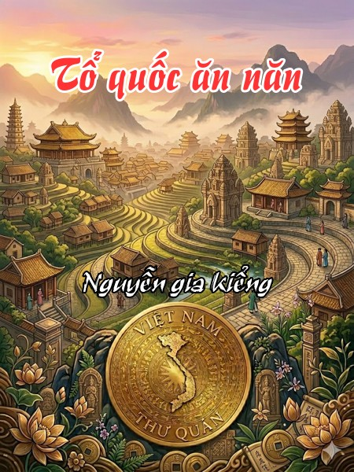

« Back
Tổ Quốc Ăn Năn
By Nguyễn Gia Kiểng

Lời Đầu
Cảm Tạ
Ghi Chú Về Tài Liệu Tham Khảo Và Bố Cục
Sơn Hà Gấm Vóc
Rất Đượm Hương Và Rộn Tiếng Chim
Sơn Xuyên Chi Cương Vực Ký Thù
Nước Non Nghìn Dặm
Lòng Mẹ Bao La Như Biển Thái Bình
Nước Non Nghìn Dặm (II)
Mưu Sự Tại Nhân...
Một Dân Tộc Tinh Anh?
Một Dân Tộc Hiếu Học?
Một Dân Tộc Sáng Dạ?
Chuồng Lợn Và Cái Cày
Hai Bằng Tiến Sĩ
Người Việt, Người Nhật
Một Dân Tộc Bất Khuất Và Tự Hào?
Yêu Nước
Ils Ne S Aiment Pas
Đôi Bạn
Phương Pháp Và Gắn Bó
Phá Vỡ Định Luật 8
Hợp Tan
Anh Hùng Nước Nam
Thằng Nào Đây?
Tiếng Mẹ Ru Từ Lúc Nằm Nôi
Máu Chảy Ruột Mềm
Mấy Ngàn Năm Lịch Sử
Con Cháu Tiên Rồng
Mở Mắt Và Nhỏ Lệ
Ảo Ảnh Lý Trần
Hồ Quí Ly Và Mạc Đăng Dung
Người Trong Một Nước?
Đem Tâm Tình Viết Lịch Sử?
Trở Lại Trường Hợp Nguyễn Huệ
Rước Voi Về Dày Mả Tổ
Cõng Rắn Cắn Gà Nhà
Cho Những Người Đã Nằm Xuống
Chấp Nhất Kỷ Chi Kiến
Dắt Dìu Nhau Vào Đến Cà Mau
Cướp Đất Của Ai?
Dừng Chân Nghĩ Lại
Tám Mươi Năm Pháp Thuộc
Một Bài Học Lịch Sử
Soi Lại Chân Dung, Ba Nét Đậm Của Đất Nước
Một Chuyển Tiếp Tự Nhiên
Bốn Ngàn Năm Văn Hiến
Một Phép Mầu, Một May Mắn Và Một Bài Học
Kinh Nghiệm Cao Ly
Đoạn Trường Tân Thanh
Thua Kém Và Nguyên Nhân
Khổng Giáo Và Khổng Tử
Sự Nghiệp Và Nhân Cách Của Khổng Tử
Di Sản Xuân Thu Chiến Quốc
Đạo Lý Thánh Hiền
Việt Nho
Mặt Thật Của Ai?
Giết Hại Công Thần
Anh Không Biết Gì Về Cộng Sản
Ưu Đạo Bất Ưu Bần?
Tổ Quốc Của Kẻ Sĩ
Một Chân Dung Tráng Lệ Của Kẻ Sĩ
Chuyện Cổ Tích
Mười Triệu Năm Đánh Đu
Mười Triệu Năm Đánh Đu
Cái Tuổi Dại Khờ
Và Ánh Sáng Bừng Lên
Hòa Lan: Cái Gì Đã Xảy Ra?
Anh: Một Dân Tộc Bán Tiệm
Hoa Kỳ:
Nhật Bản: Tự Do Trá Hình Và Dân Chủ Giấu Mặt
Những Xã Hội Phồn Vinh Khác
Cùng Một Hiện Tượng
Những Thí Dụ Phản Bác?
Singapore: Một Thị Trưởng Xuất Sắc
Mã Lai: Dân Chủ Ngay Từ Khi Thành Lập
Đại Hàn Dân Quốc:
Thái Lan: Mãi Đến 1992
Philíppin: Sự Bịp Bợm Của Marcos
Inđonesia: Sự Ra Đời Vội Vã Của Một Nước Lớn
Đài Loan: Từ Một Chiến Khu Tới Một Quốc Gia
Châu Mỹ La Tinh: Một Thế Kỷ Rưỡi Trong Bóng Đêm
Những Lập Luận Phản Bác?
Những Định Luật Cho Một Xã Hội Phát Triển?
Kinh Bang Tế Thế
Huyền Thoại Kế Hoạch
Laissez-Faire?
Quốc Gia, Dân Tộc
Quốc Gia
Nhà Nước
Nhà Nước- Quốc Gia
Dân Tộc
Chủ Quyền
Quốc Gia, Nhà Nước Và Dân Chủ
Đất Nước Ta
Vài Vấn Đề Về Dân Chủ
Đi Xa Hơn Dân Chủ
Các Giá Trị Châu Á?
Thập Nhị Sứ Quân
Phản Xạ Tổng Thống
Chuyện Của Các Luật Sư
Một Thoáng Suy Tư Về Châu Phi
Tổ Quốc Ăn Năn
Gởi Vào Giấc Mộng, Nhắn Ra Cuộc Đời
Một Số Nhận Định Về Tỏ Quốc ĂN NĂN Và Tác Giả
Bình Luận